Errotatxo: pan de Tolosa desde 1996, ahora también en internet.
Okindegia Errotatxo hace pan, pastelería y café en Tolosa desde 1996, con tres tiendas: dos en Tolosa y una en Anoeta. Esta es la web que les hice, contada por dentro.
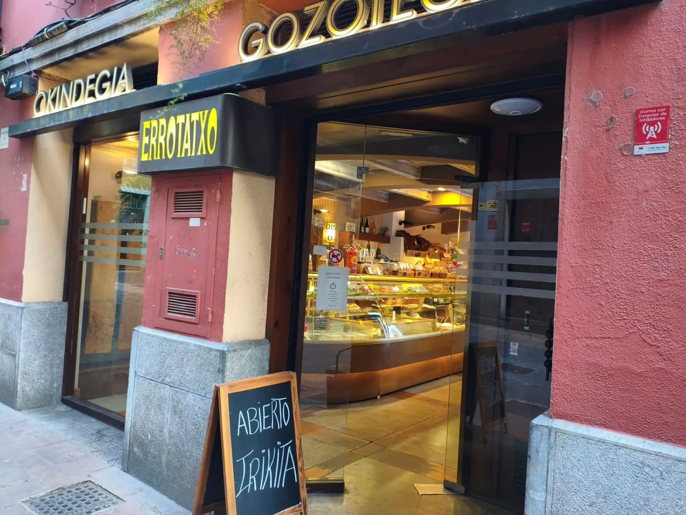
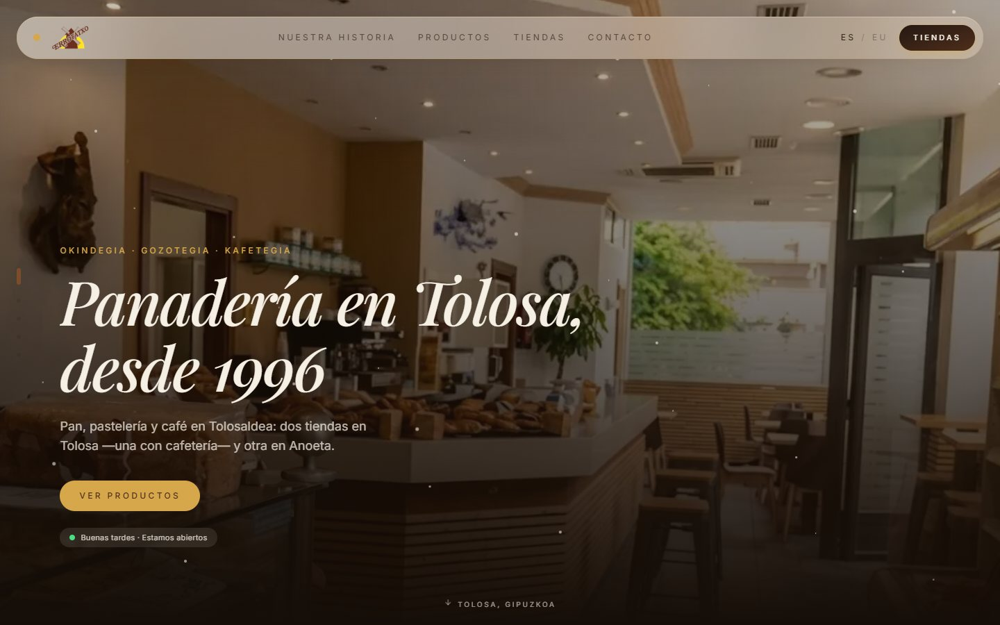
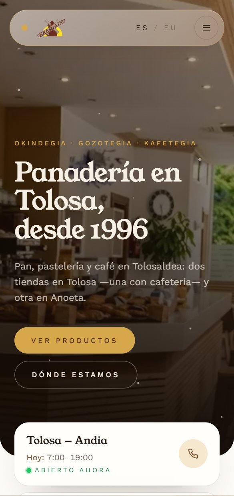
Tres mostradores, tres horarios y una pregunta: ¿está abierto?
Con tres tiendas que abren y cierran a horas distintas, lo primero que busca quien quiere pan es cuál le pilla cerca y si puede ir ahora. La web tenía que responder a eso en segundos, en el móvil y en los dos idiomas del pueblo. Y tenía que parecer Errotatxo: un obrador de toda la vida, no una plantilla.
Andia, San Frantzisko y Anoeta, cada una con su dirección
Cada tienda tiene su propia página con su horario, su teléfono y el botón para llegar. Así, cuando alguien busca una panadería cerca de San Frantzisko o en Anoeta, Google tiene una página concreta que enseñarle, no solo la portada.
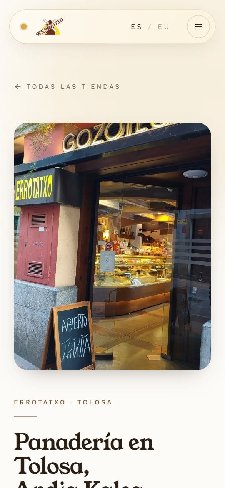
La web dice si está abierto ahora mismo
Nada de horarios en una imagen que nadie actualiza: la web mira la hora y avisa de qué tiendas están abiertas y cuándo abre la siguiente. Es la pregunta que más se hace por teléfono, respondida sin llamar.
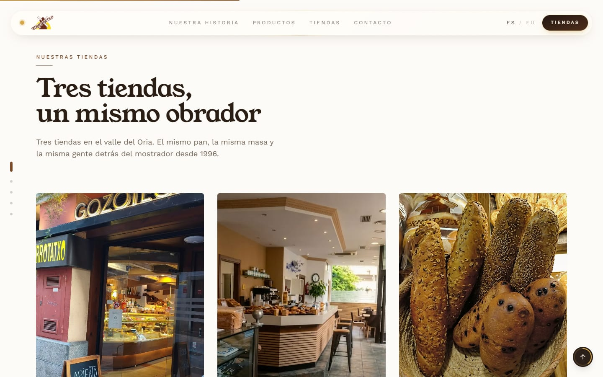
En el idioma en que se pide el pan en Tolosa
Toda la web está en los dos idiomas, con un selector ES / EU siempre a mano. En Tolosaldea mucha gente vive en euskera, y una panadería de aquí tiene que hablarle como le habla en el mostrador.
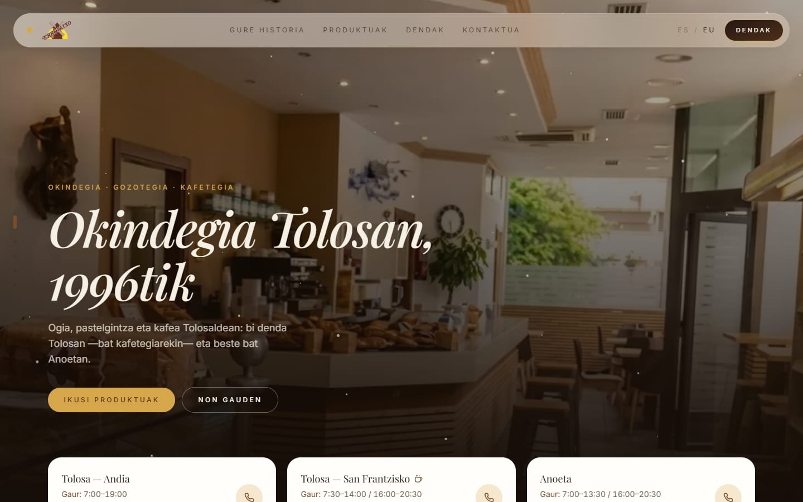
El obrador, tal cual es
La web está hecha con fotos de sus tiendas y de lo que hacen cada día, en una galería con visor y filtros: pan, dulce, café y tiendas. El pan de pasas o la fachada de Andia con la pizarra en la puerta no los tiene ninguna otra panadería.
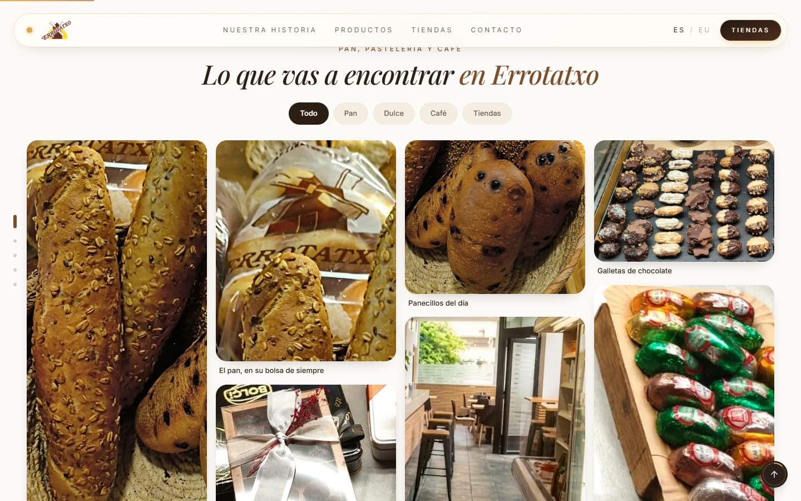
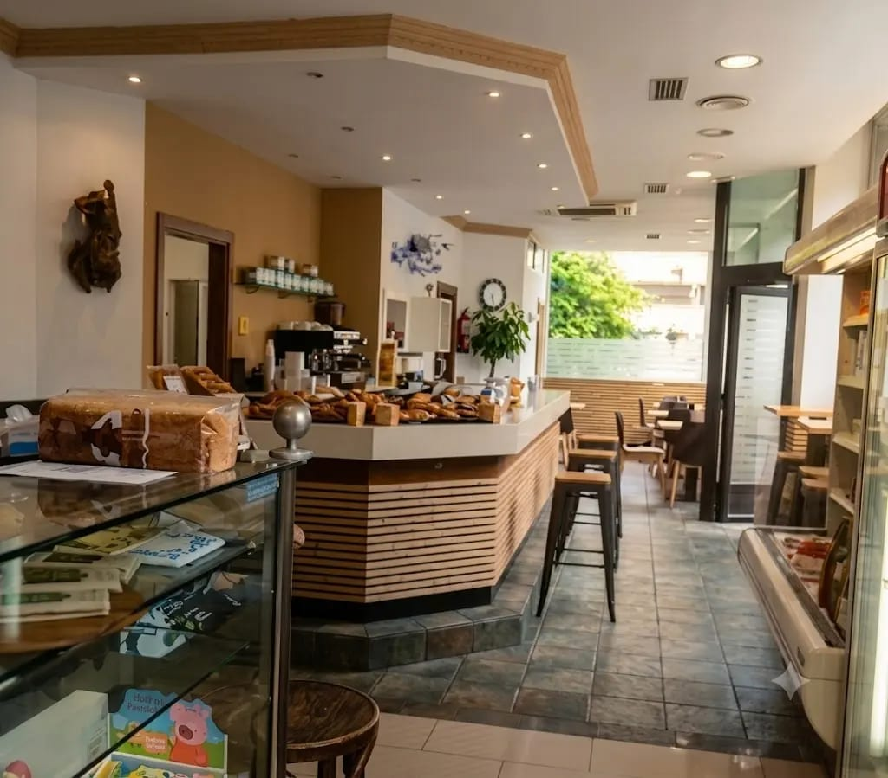
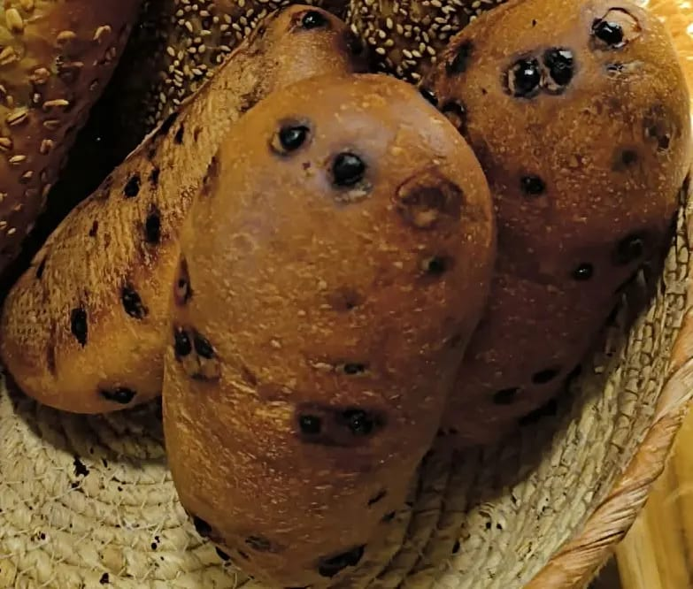
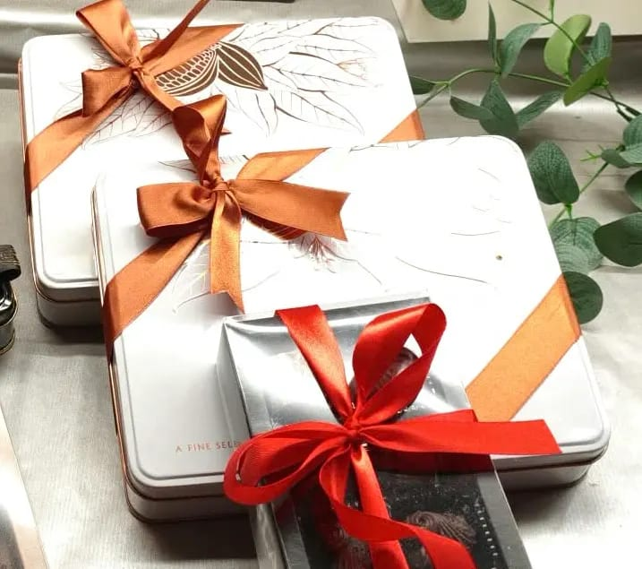
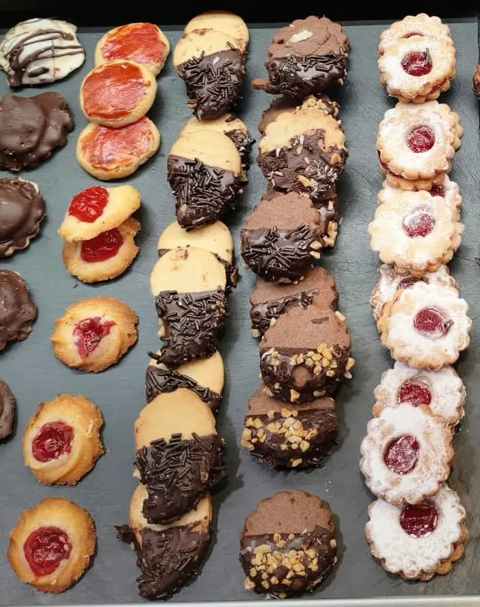
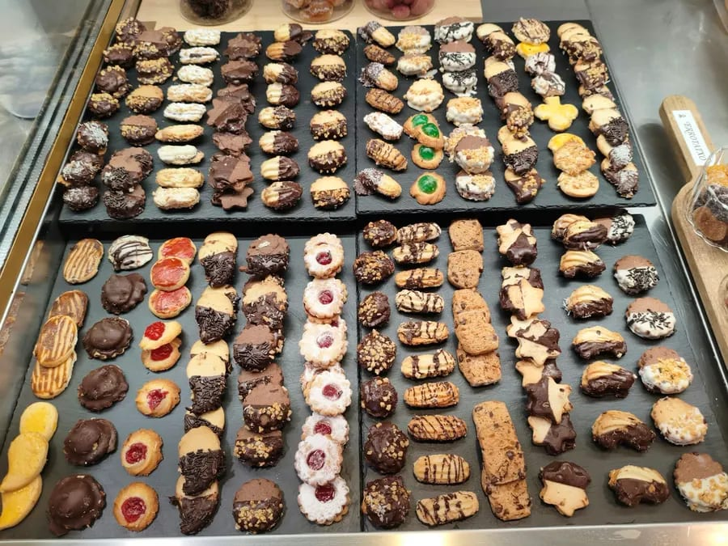
Y lo que no se ve, también.
- Su propio dominioerrotatxo.com, a su nombre. La web es suya.
- Datos para Google por tiendaDirección, horario y teléfono de cada una, en el formato que Google entiende.
- Llamar o ir, a un toqueEn el móvil, una barra fija con el teléfono y la ruta a la tienda.
- Aviso legal y privacidadCon los datos de la empresa y su correo, como pide la ley.
- 21 fotos con visorSe abren a pantalla completa y se pasan con el dedo, como en el móvil.
- Cambios por WhatsAppUna foto nueva o un horario de festivos se cambian con un mensaje.
¿Tu negocio también lleva años haciendo las cosas bien? Que se vea.
Cuéntame qué haces y te preparo una propuesta en 48 horas, con precio cerrado. Desde 199 €.